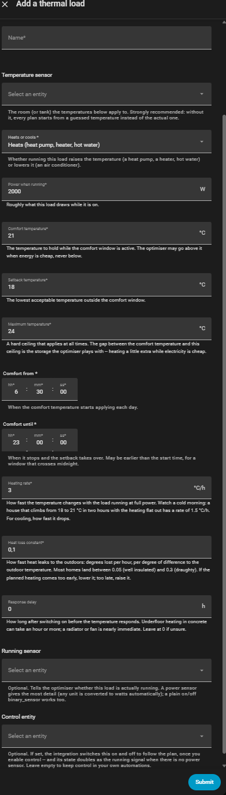
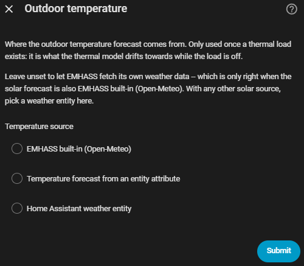

Thermal loads¶
A thermal load is a deferrable load whose temperature the optimiser controls rather than its run time: a heat pump, direct electric heating, an air conditioner. Instead of "run three hours a day", the contract is "keep this room between 18 and 24 °C, and at least 21 °C while we are awake" — and EMHASS picks the cheapest hours that satisfy it, pre-heating into cheap electricity where the band allows.
This maps onto EMHASS's thermal model
(the recommended min_temperatures / max_temperatures form), with the
Companion translating human-scale settings into the per-timestep lists EMHASS
wants.
Adding one¶
Settings → Devices & services → EMHASS Companion → Add thermal load — a separate button from Add deferrable load, with its own questions:

| Question | Meaning |
|---|---|
| Temperature sensor | The room (or tank) the comfort band applies to. Read live on every optimisation as the plan's start temperature. |
| Heats or cools | Whether running the load raises the temperature (heat pump) or lowers it (air conditioning). |
| Power when running | Electrical draw at full power — this is the power EMHASS schedules. |
| Comfort / setback / maximum temperature | The band. Comfort holds inside the comfort window, setback outside it, and the maximum is a hard ceiling at all times. |
| Comfort from / until | The daily comfort window, which may cross midnight. |
| Heating rate | Degrees per hour at full power. In the collapsed Advanced settings section, along with the next two rows. |
| Heat loss rate | Degrees lost per hour, per degree of difference to outdoors (EMHASS's cooling_constant). |
| Response delay | Lag between switching on and the temperature responding (EMHASS's thermal_inertia) — an hour or more for underfloor heating in concrete, 0 for a radiator or fan. |
| Running sensor / control entity | Same as an ordinary deferrable load. |
Like an ordinary load, the answers only seed the load: from the moment it exists, every optimiser-facing value (the comfort band, the window, the physics) is an entity on the load's own device page, adjustable from a dashboard or an automation without reloading anything.
Temperature targets accept 5-95 °C in both setup and the device controls. This is the input range; the room-heating defaults are unchanged. Higher targets do not switch models: a Room load retains its simple model with heat loss relative to outdoor temperature. Choose Water tank explicitly for water storage and estimated hot-water consumption.
Water tank (immersion heater)¶
Under Add thermal load, choose Water tank instead of Room. The first version supports one tank and one electric heater, which is an immersion element unless you set a heater COP (below). Several heat sources and a COP that varies with outdoor temperature are not modelled. Existing thermal loads remain room models, even with high temperature targets. The model is fixed when created; use a new load to change models, and never leave two loads controlling the same heater.
Enter the tank volume in litres (the form starts at 200), actual heater power in watts, a temperature sensor, and explicit Lowest standby temperature, Required hot-water temperature and Maximum temperature limits, in that order. These are tank temperatures, not tap temperatures. The shared input limits are not operating recommendations: use the tank and heater's permitted temperatures. Device thermostats and over-temperature protection remain authoritative; this feature does not provide disinfection schedules.
A tank that is too cold to meet its schedule in time (it has cooled down, or a hot-water period starts soon) does not stop EMHASS from planning. The request asks for the highest temperature the heater can reach at each step instead, so the tank heats as fast as it can and catches up on its own. A repair warning, "tank name cannot reach its hot-water target in time", says by when and by how much; it clears once the schedule is reachable again. If it keeps returning, lower the required or lowest standby temperature, use a stronger heater, or check that the temperature sensor really belongs to the tank.
Choose Number of hot-water periods (1–8) on the tank settings page. Each following page is Hot-water period 1 of 2, 2 of 2, and so on, asking for:
- An optional name, such as Morning or Evening.
- Hot water needed from / until, in local time.
- Estimated consumption for this period, as withdrawn heat in kWh, not electrical heater consumption. Each period has its own amount; it is not the daily total copied into every period.
Water must be ready at each period's start, and the required temperature applies throughout it. Between periods the lowest standby temperature applies, with a pre-heating ramp before each start. The optimiser chooses when to heat from prices and PV; the periods are not heater timers. Overlapping periods share the same temperature target and their estimated consumption is added. Enter zero for no estimated withdrawal; availability targets and standby losses still apply.
Each period has start/end time entities, a consumption number and an enable switch on the tank device. Edits persist and request optimisation without an integration reload while the tank load is enabled. With the load disabled, edits save without requesting optimisation, just like other deferrable loads. All settings-triggered solves share a three-second delay that restarts with each change; values save immediately, including whole-plan action updates. Disabled periods retain their settings, contribute no draw and impose no required-temperature window; disabling every period leaves the standby temperature target. These controls remain editable while disabled.
The emhass_companion.set_hot_water_plan action accepts a tank device_id and
a periods list of 1–8 objects with draw_start, draw_end, draw_energy_kwh,
optional name, and optional boolean enabled (default true). It validates and
saves the whole plan atomically, then requests one optimisation. New slots get
entities live; removed slots become unavailable. See the
guide example for automation YAML. Legacy tanks must
first be reconfigured to adopt period-based scheduling.
Reconfigure the tank to change its volume, period count or individual periods. Existing periods are prefilled in order; reducing the count keeps the first periods, increasing it adds blank pages. Nothing is saved until the final period is submitted. Existing single-window tanks continue unchanged until edited; their old consumption settings are then offered as one period. Saving adopts the combined availability/consumption schedule instead of the old separate comfort window. Power, target temperatures and Standby loss remain restored controls on the load's device. New period-based tanks have no separate comfort time controls. Standby loss is watts of heat continuously lost, separate from hot-water use; start from the tank's specification or an observed no-draw cooling period. It is offered under the collapsed Advanced settings section when the tank is first created, and starts at 60 W. Room heating-rate, cooling-constant and response-delay controls are not created.
Advanced: heater COP and comfort penalty¶
Two more settings sit in the collapsed Advanced settings section of the first setup form, next to Standby loss, then become restored controls on the load's device like the others. The defaults suit an immersion element and need no change.
- Heater COP is the heat delivered per unit of electricity. Leave it at 1 for an immersion element. For a heat-pump water heater enter its seasonal COP at tank temperature, typically 2.5 to 3.5 and well below the headline rating. Power stays the electrical power drawn while running. The COP is a constant; EMHASS can also model a COP that follows outdoor temperature, but that needs an outdoor forecast and is not set up here.
- Comfort penalty decides how strictly the required hot-water temperature is kept. At 0 (the default) it is a hard limit, and a tank that cannot reach it in time is aimed at the highest temperature it can reach instead. Above 0 it becomes a target: only the lowest standby temperature stays hard, and each degree below the target in a timestep costs this much in your price currency. Compare it with what a degree costs to heat: for 200 litres that is about 0.23 kWh divided by the COP, times the price per kWh. A penalty of 1 or more behaves like a hard limit; around 0.1 to 0.5 lets the tank sag a few degrees when electricity is expensive; 10 is effectively a hard limit that can still never leave the optimiser without a plan. It adds one binary variable per timestep, so solves take somewhat longer.
The tank's water volume and heater power determine stored energy and heating rate. For reference, 200 litres heated at 2 kW for one hour gains about 8.6 degrees Celsius before standing losses or withdrawals. Every solve starts from the live tank temperature. A single temperature represents the whole tank: stratification, mixing and unexpected consumption remain approximations, not measured predictions.
Consumption is aligned to the optimizer's actual interval grid and resampled without changing daily energy. Windows may cross midnight; equal endpoints mean a full local day. On daylight-saving changes, energy is spread across the actual elapsed window; partial horizons receive only their overlapping share. Ambiguous endpoints use their first occurrence; missing endpoints advance to the first valid local time. If both endpoints collapse onto that instant, the energy is allocated to its containing interval once.
Water tanks require a known EMHASS 0.18.8 or newer backend. They use
thermal_battery with water properties, the heater COP as efficiency (1 for an immersion element), standing losses
and a full-horizon draw-off profile (including explicit zeros for standby-only).
An immersion-only installation does not need an outdoor-temperature forecast for
the tank model; any independently selected PV/weather forecast still has its own
requirements. Planned-temperature and should-run entities and heater control use
the same global load indices as ordinary and room loads.
For enabled tanks, missing, nonfinite or invalid temperature blocks a new solve and tank control commands, rather than falling back to a room temperature. Should run becomes unknown, including during forced-on mode. An existing switch is left unchanged; the device thermostat retains autonomous responsibility. A plan blocked by invalid data is not resumed until a new valid solve succeeds. Disabling a tank still gives the normal off command unless forced on; it does not require valid telemetry or a tank-capable backend. This is not a replacement for hardware safety controls. Check the configured profile, temperatures and actual hardware behaviour during a supervised trial before unattended operation.
What a thermal load does not have¶
There is no operating-hours target, so everything anchored to one is absent rather than disabled: the Hours needed number, the one unbroken block switch, recurrence/on-demand and the Requested switch. Its demand is the comfort band, which stands every day by nature. Enabled, force on/off, the run-time window, startup penalty and max starts all still apply.
Ownership and payload mechanics¶
- The subentry owns identity: name, temperature sensor, heats/cools, running sensor, control entity. Edit thermal load re-offers exactly these.
- Entities own everything the optimiser is told, restored across restarts the same way as every other load setting.
- On every request the registry builds a fresh
ThermalConfig(deferrable.DeferrableRuntime.thermal_config), reading the room sensor at that moment (unit-converted to Celsius; an unavailable sensor omitsstart_temperatureand lets EMHASS use its own default). payload._thermal_settingsemitsdef_load_configwith one entry per configured load —{}for ordinary ones — because EMHASS overwritesnumber_of_deferrable_loadswith that list's length. A disabled thermal load is parked like any other and gets an empty entry: temperature targets are exactly the demand a parked load must not carry.- Thermal loads are sent with 0 operating hours. EMHASS skips the energy
equality for them (their temperature constraints replace it) and pins
param_load_activeto 1, so 0 hours does not deactivate them.
Outdoor temperature¶

The model needs an outdoor temperature forecast — it is what the room drifts
towards while the load is off. Configure → Outdoor temperature offers the
same profile engine as every other input (profiles/builtin/temperature/),
and a source is required once a thermal load exists:
- Home Assistant weather entity — hourly forecast via
weather.get_forecasts. The two below are under the collapsed Advanced settings section. - Entity attribute — a list-valued attribute on any entity.
- EMHASS built-in (Open-Meteo) — no series; sets
weather_forecast_method: open-meteoso EMHASS fetches it itself. Requires your home's location to be set correctly under Home Assistant's Settings → System → Home information (that pin is what EMHASS fetches from), and is only correct when the solar forecast is also EMHASS built-in.
The series and settings are only fetched/sent once a thermal load actually
exists (DeferrableRegistry.has_thermal).
Output¶
Alongside the usual per-load sensors, a thermal load gets Planned
temperature: the room temperature EMHASS expects right now under its own
plan (predicted_temp_heater{k} in the plan output), with the full horizon
in a forecast attribute. EMHASS's docs suggest feeding this to a climate
entity as its setpoint — the plan already accounts for price, so following
the predicted trajectory is what realises the savings.
Calibration¶
Start conservative (the defaults) and tune from observed behaviour:
- Plan heats too early → heat loss rate too high, or heating rate too low.
- Comfort missed at window start → heating rate too optimistic, or the response delay is real and unset.
- The optimiser never pre-heats → the gap between comfort and maximum temperature is the storage it plays with; widen it.
EMHASS heat topology¶
EMHASS 0.18.5 extends its heat_topology setting into a full model of a hybrid
heating plant: several heat sources (heat pump, boiler) feeding tanks, tanks
feeding each other, and a house modelled as a thermal mass with window solar
gain. The Companion does not manage a topology. A thermal load above is
still the single-load model, and EMHASS keeps supporting it unchanged.
Every request the Companion sends explicitly turns EMHASS's heat topology off
(an empty heat_topology), so a topology saved in the EMHASS add-on cannot
replace or add to the loads the Companion plans. By default EMHASS would
replace every deferrable load of a run with the ones the topology builds,
which silently drops the Companion's loads; sending the empty value prevents
that, and the old repair issue for it no longer exists. The same applies to
shared thermal tanks on EMHASS 0.18.6 or newer.
A topology you keep in EMHASS still applies to runs you start from EMHASS's own UI, and the Companion does not plan it. Do not use Write settings to EMHASS if you want to keep it: that action writes the empty topology too (see Hub controls). The topology's own loads get no entities or controls from the Companion; drive that hardware from EMHASS's own outputs.